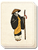

Requires
- Buildings:

- Arts: 
- Religions:

Enables
- Units:


Spawned Garrisons
- Units:

Basic Building Statistics (can be modified by difficulty level, arts, skills, traits and retainers)
- Cost: 8000
- +6 happiness for the Ikko population
- Spreads radical Ikko beliefs to neighbouring provinces (+8 religious zeal)
- Converts the populace into followers of the Ikko faith (+10 religious zeal)
- +10% to the replenishment rate in this province
- Enables recruitment of Rank 1 Ikko monks
Clan Effects
- Improves the rate at which chi arts are mastered: +10%
- Each Ikko temple chain building enables you to sustain one additional Ikko monk (to a maximum of 5)
Description
Faith can build mountains.
This massive complex of temples and halls is dedicated to the Jodo Shinshu Buddhism, and is open to every monk, peasant or samurai who wishes to worship and learn. The old doctrines are set aside, as the teachings of Jodo Shinshu hold that anyone can attain enlightenment, and that solitary meditation is not the only path. Construction of this magnificent shrine brings happiness to the Ikko Ikki, and improves unit replenishment as followers volunteer their services. The Ishiyama Honganji was built in 1496, a huge temple complex that housed the headquarters for the Ikko Ikki. It was constructed in Settsu after Rennyo (1415-99), the priest responsible for rejuvenating the faith, retired. His followers settled around him, building homes and eventually a mighty, self-contained fortress protected by its own moat and guarded by hundreds of Ikko monks. In 1570 and 1576 Oda Nobunaga laid siege to the fortress, only to be seen off by the Ikko Ikki and their allies. A second attempt in 1576 was successful, as Nobunaga gradually strangled the fortress, cutting off its outlying areas and isolating it from any help. After four years of the siege, the Honganji capitulated in 1580. This building can only be constructed by the Ikko Ikki and cannot be used by any other clan.